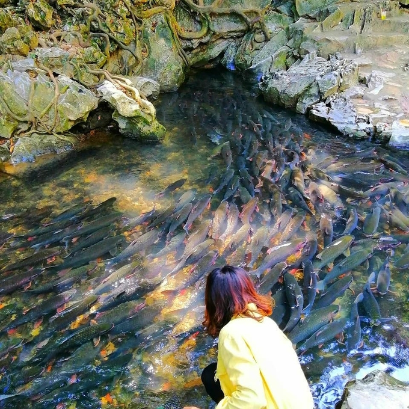
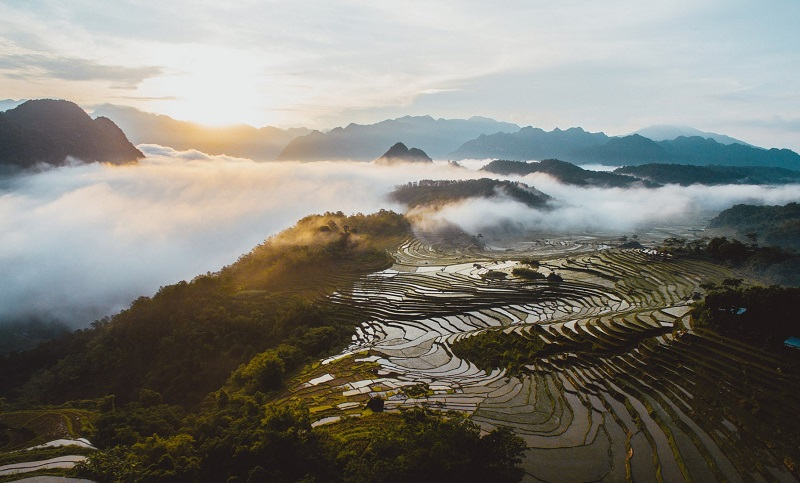
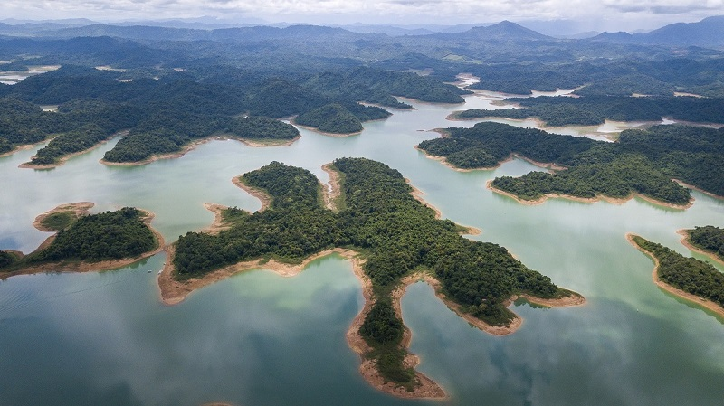

1. Sầm Sơn
Cách trung tâm thành phố Thanh Hóa chỉ 16km, mỗi dịp hè về, Sầm Sơn đều đón chào rất nhiều du khách trong và ngoài nước tới đây vui chơi, nghỉ dưỡng. Bãi tắm Sầm Sơn rộng, sóng to, cát trắng mịn và có nhiều điểm giải trí hấp dẫn nên đặc biệt hút khách. Du lịch Sầm Sơn Thanh Hóa, bạn không chỉ được tắm biển thỏa thích, tham gia các trò chơi dưới nước như dù bay, mô tô nước,... mà còn thỏa sức ngắm cảnh bình minh hay hoàng hôn đẹp chất ngất trên biển. Đơn giản hơn là đi dạo bờ biển về đêm để tận hưởng trọn vẹn sự lãng mạn của biển cả, đạp xe đạp đôi quanh những con đường ven biển xinh đẹp hoặc tham gia kéo lưới cùng với dân chài vào buổi sớm mai,… Tại Sầm Sơn còn có rất nhiều điểm tham quan, vui chơi thú vị bạn nên ghé thăm như: Thủy Tiên Cung (nằm dưới chân núi Trường Lệ), chùa Độc Cước, hòn Trống Mái, chùa Cô Tiên,...

2. Thành nhà Hồ
Đây chính là điểm đầu tiên của con đường di sản miền Trung vô cùng thú vị đang chờ bạn khám phá. Du lịch Thanh Hóa, bạn phải ghé ngay di tích thành nhà Hồ sừng sững cùng năm tháng từ đời vua Hồ Quý Ly với kiến trúc kinh thành độc đáo và tráng lệ. Trải qua ngót nghét 600 năm với những thăng trầm của lịch sử cùng ảnh hưởng của thời tiết mà tường thành phía ngoài vẫn còn khá nguyên vẹn. Toàn bộ khung thành được xây dựng bằng nhiều phiến đá vôi màu xanh được đục đẽo kỳ công, tinh xảo, vuông vắn xếp chồng khít lên nhau. Mỗi phiến đá dài khoảng 1.5 m, có tấm lên đến 6m, được xếp chồng lên nhau mà không cần bất kì một chất kết dính nào. Qua năm tháng, tường thành vẫn hiên ngang sừng sững cho đến ngày nay.

3. Suối cá thần
Thanh Hóa là miền đất nổi tiếng với nhiều danh lam thắng cảnh đẹp. Một trong những điểm đến tâm linh, sinh thái nhất nhì quê hương điệu hò sông Mã chính là suối cá thần Cẩm Lương. Suối cá thần Thanh Hóa là một tuyệt phẩm của tạo hóa ban tặng. Nơi đây không chỉ nổi tiếng bởi vẻ hoang sơ, mộc mạc mà còn gắn liền với những huyền tích kỳ bí từ xa xưa. Đây là dòng suối Ngọc nằm dưới chân núi Trường Sinh, có hàng nghìn con cá chen chúc, gắn với những câu chuyện lưu truyền của người dân nơi đây. Gần suối có hang núi rất đẹp, gọi là động Cây Đăng. Trong động có thạch nhũ mang nhiều hình thù đẹp mắt. Nếu may mắn, bạn có thể được thấy cá chúa nặng lên tới 30kg. Điều đặc biệt là mặc dù rất nhiều cá chen chúc nhau nhưng nước ở đây vẫn rất trong. Bạn hãy dừng chân tại suối cá thần khi đến xứ Thanh để tận hưởng không khí trong lành của núi rừng và nghe những câu chuyện huyền tích, thưởng thức đặc sản nơi đây nhé!
4. Pù Luông
Khu bảo tồn thiên nhiên Pù Luông cách thành phố Thanh Hóa 130km về phía Tây Bắc và cách Hà Nội khoảng 150km. Đường đến Pù Luông dù đi từ hướng Hà Nội hay Thanh Hóa đều rất dễ đi, ngay cả những đoạn đường đèo. Tại Pù Luông, bạn có thể ngắm nhìn những bản làng được bao quanh bởi ruộng bậc thang, những cánh rừng xanh mát xen lẫn những dãy núi trập trùng cùng con suối và dòng thác mát rượi.
Thức dậy thật sớm, nhẹ nhàng đi trên con đường ra đồng, đón làn mây bay bay qua người, chạm tay vào từng cây lúa còn đọng giọt sương sớm,... là những giây phút thảnh thơi hiếm có dành cho du khách. Thêm một trải nghiệm tuyệt vời nữa khi bạn cảm nhận những tia nắng ấm đầu tiên chạm vào người, ngắm nhìn cuộc sống bình dị của người dân nơi đây thì mọi lo toan, mệt mỏi dường như tan biến hết,… chỉ còn lại bình yên!

5. Khu du lịch Bến En
Vườn quốc gia Bến En điểm du lịch sinh thái hấp dẫn với núi, rừng, sông, hồ. Đặc biệt ở đây có hồ sông Mực rộng 3.000ha với hơn 20 hòn đảo lớn nhỏ. Đi thuyền trên sông và thưởng thức những món ăn từ cá mè, khám phá phong tục tập quán của người Thái chắc chắn sẽ là những trải nghiệm đáng nhớ ở khu du lịch Bến En của mọi du khách.
6. Khu di tích Lam Kinh
Lam Kinh (hay còn gọi là Tây Kinh) là điểm du lịch Thọ Xuân Thanh Hóa, cách thành phố Thanh Hoá 52 km về phía Tây Bắc. Khu di tích lịch sử Lam Kinh rộng khoảng 30 ha, gồm những lăng mộ, đền miếu và một hành cung của các vua nhà Hậu Lê mỗi lần về bái yết tổ tiên. Thánh điện Lam Kinh phía Bắc dựa vào núi Dầu, phía trước thành hướng Nam và nhìn ra sông Chu - có núi Chúa làm bình phong. Bên trái thánh điện là rừng Phú Lâm, bên phải là núi Hương và núi Hàm Rồng chắn phía Tây - nơi người anh hùng Lê Lợi dựng cờ khởi nghĩa chống quân Minh xâm lược. Đến với khu di tích Lam Kinh, bạn không những có thể thắp hương bái Phật, vãng cảnh chùa thanh tịnh mà còn được lắng nghe, tìm hiểu những câu chuyện lịch sử vô cùng thú vị nữa đó.